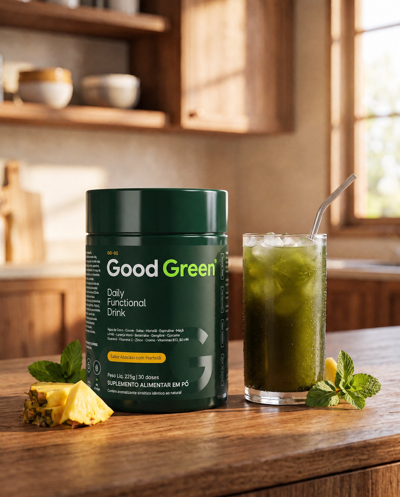
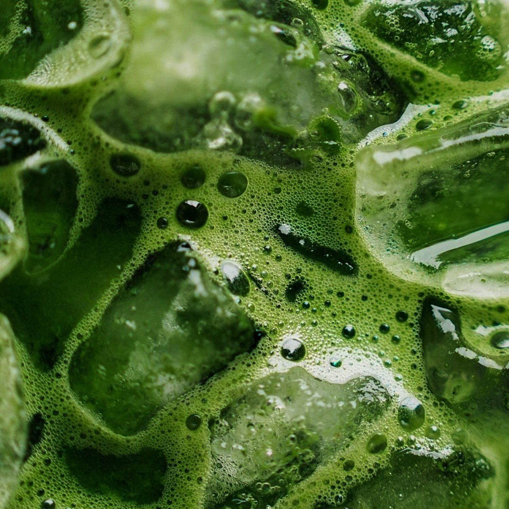
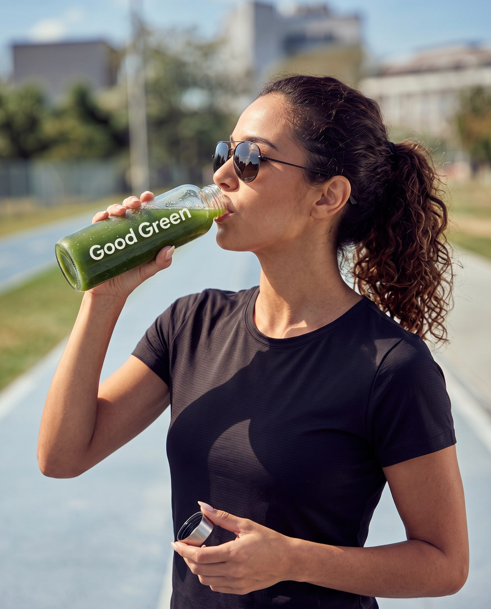
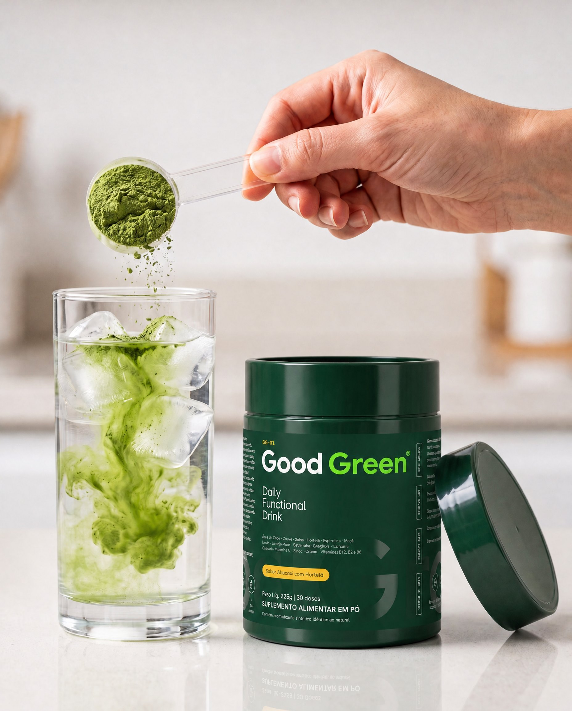
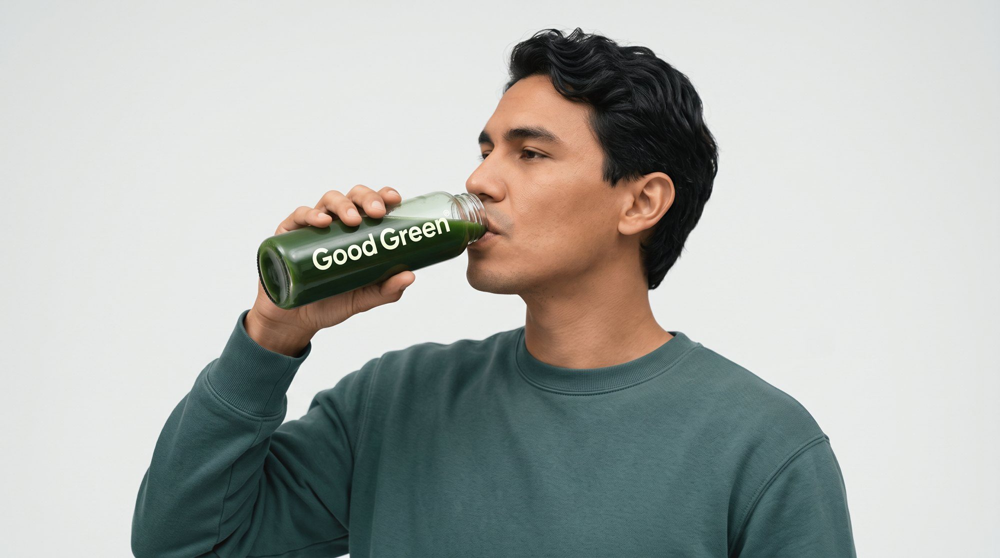
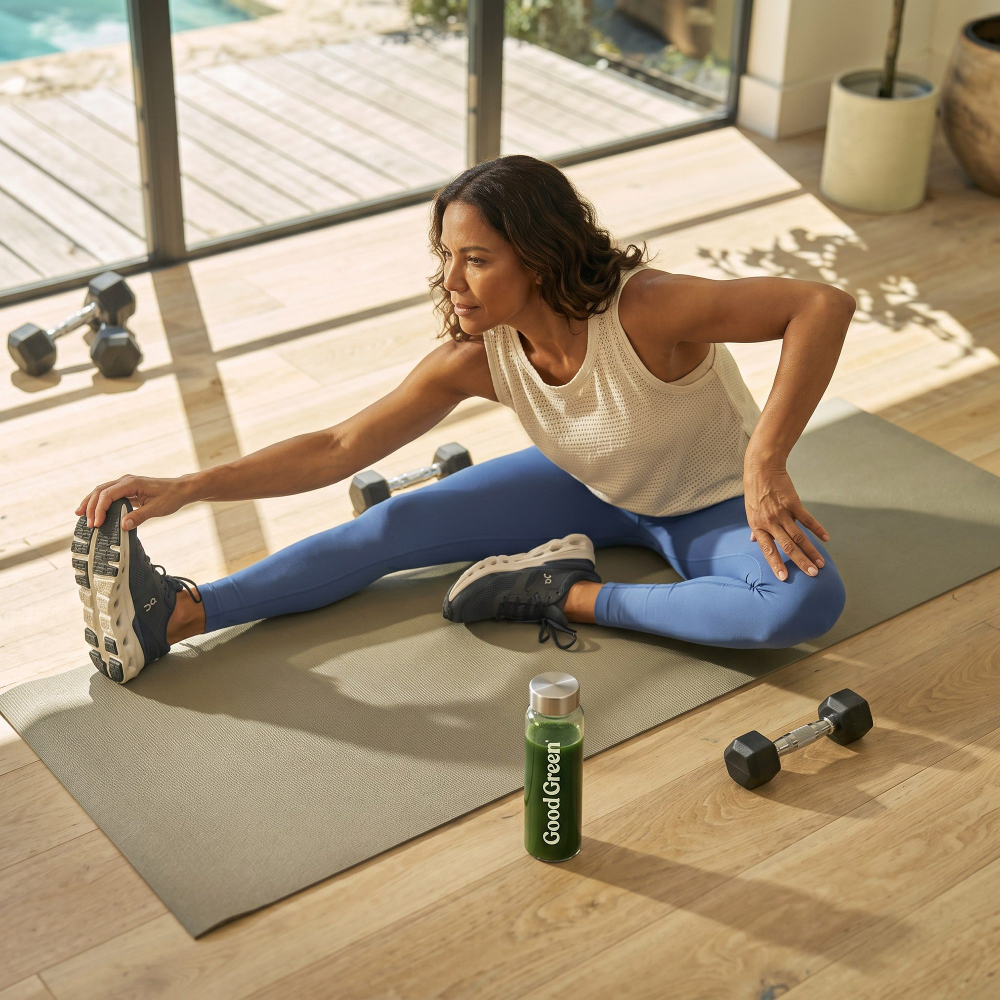
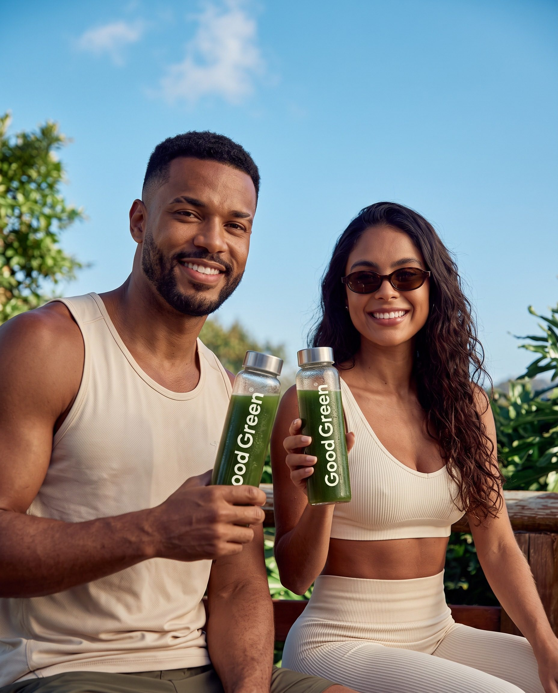
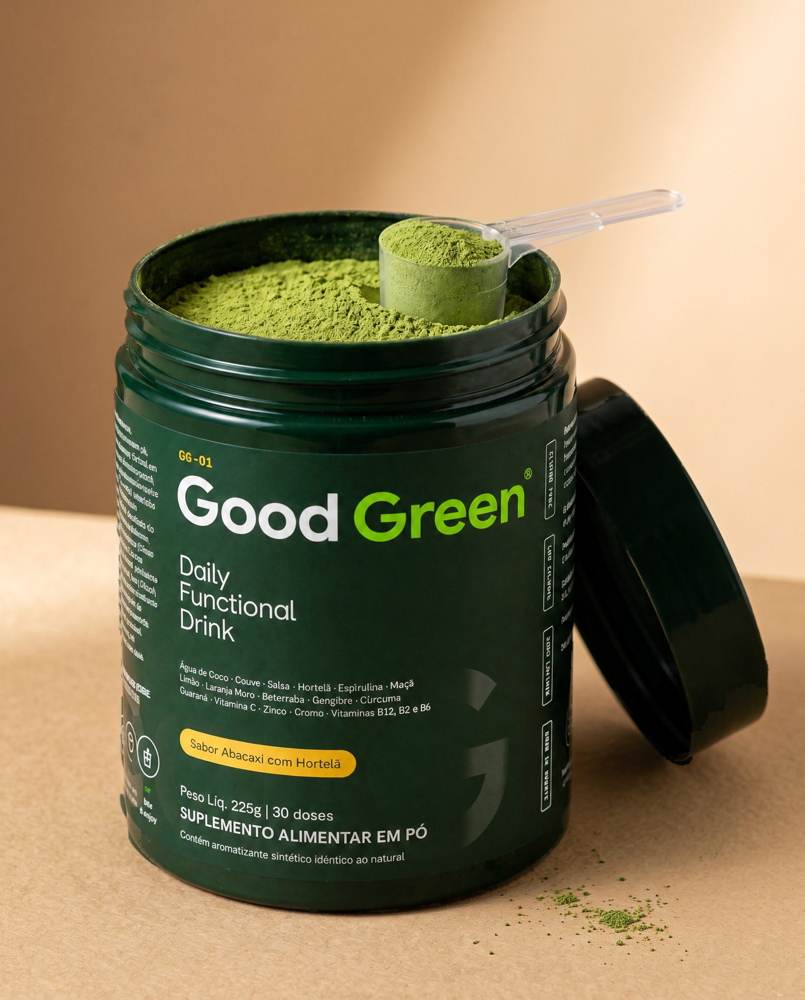

Novo · GG-01 Daily Functional Drink
Seus verdes,
Seus verdes,
sem esforço.
Uma medida de Good Green em 300 ml de água. Vitaminas, minerais, fibras e ingredientes vegetais, com sabor de abacaxi com hortelã.
Uma medida de Good Green em 300 ml de água. Vitaminas, minerais, fibras e ingredientes vegetais, com sabor de abacaxi com hortelã.
225 g · 30 doses · uma medida por dia
Sabor Abacaxi com Hortelã

7,5 gem 300 ml de água
Couve, espirulina, gengibre, guaraná e outros ingredientes vegetais.
Vitaminas B2, B6 e B12 auxiliam no metabolismo energético.
A cafeína do guaraná auxilia no aumento do estado de alerta e na concentração.
Vitamina C e zinco auxiliam no funcionamento do sistema imune.
Fibras e ingredientes vegetais para a rotina do seu intestino.
Fibras, ingredientes vegetais e micronutrientes numa dose diária, para acompanhar o equilíbrio do seu intestino todos os dias.
7,5 g de Good Green.
Gelada, se preferir.
Até ficar homogêneo.

Depoimentos ilustrativos até o lançamento
Virou meu café da manhã verde.Marina, 34 · São Paulo



Uma medida e pronto.
Sabor de abacaxi, sem gosto de mato.Lucas, 29 · Curitiba
| Good Green | Suco verde caseiro | Vários potes de suplemento | |
|---|---|---|---|
| Pronto em 30 segundos | — | ||
| Sem lavar, cortar e bater | — | ||
| Vitaminas C, B2, B6, B12, zinco e cromo | — | parcial | |
| Couve, espirulina, gengibre e guaraná | parcial | — | |
| Baixo em calorias | parcial | ||
| Uma dose por dia | — | — | |
| Custo por dose | R$ — | R$ — | R$ — |

Misture uma medida (7,5 g) em 300 ml de água até ficar homogêneo. Uma vez ao dia.
Indicado para maiores de 19 anos. Não deve ser consumido por gestantes, lactantes e crianças.
Sim, vinda do guaraná: 75 mg por porção de 7,5 g.
Não contém glúten e é zero lactose. Alérgicos: contém derivados de peixe.
Mantenha o pote bem fechado, em lugar fresco e seco. Depois de aberto, consuma em até 60 dias.